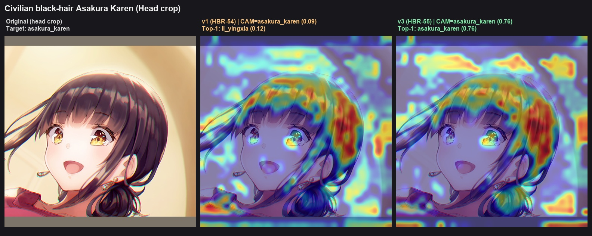
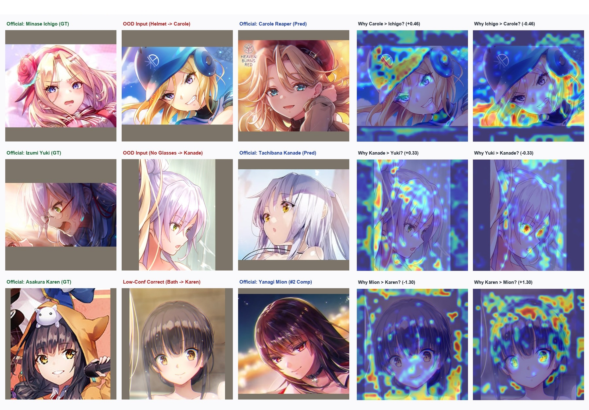

06 · Grad-CAM XAI
Grad-CAM 기반 Attention 변화(v1 → v3) 및 OOD 오탐 분석
ViT-Base 마지막 블록(blocks[-1].norm1)의 Grad-CAM으로 v1 → v3의 Attention 변화를 확인하고,
공식 스틸컷 OOD 사례의 오탐·저신뢰 원인을 Contrastive CAM으로 분해했습니다.

akagi_rumi (희소 Long-Tail) · v1 오분류(0.062) → v3 0.9894

asakura_karen (Attention 집중 개선) · v1 오분류(0.123) → v3 0.7567
OOD 오탐 · 저신뢰 사례 해부 (평소 외형 · OOD 입력 · 경합 대상 · Contrastive Grad-CAM)

Why Comp > GT 오탐 요인(4열) · Why GT > Comp 정답 근거(5열)
1. 소품 간섭 · minase_ichigo
분류기 학습셋에 드문 파란 야구 헬멧을 착용해 동일 금발 계열(carole_reaper)로 밀렸으나(+0.46),
금발 머리카락 영역은 정답 쪽으로 반응.
2. 안경 미착용 · izumi_yuki
평소 안경 캐릭터인데 안경 벗은 분류기 학습 이미지가 적어 머리색이 비슷한 kanade로 미세 역전(+0.33).
단, CAM은 고유 초록 눈매를 포착해 REVIEW 격리.
3. 의상 누락 · asakura_karen
평소 시그니처 주황 후드가 없는 목욕씬이라 보수적으로 REVIEW(0.19) 격리됐으나,
앞머리·노란 눈 특징으로 Top-1 정답 유지(+1.30).